前言
继续深入了解dedecms漏洞，正好看到freebuf出台了最新漏洞,cookie伪造导致任意前台用户登录就认真的审计了一番。
环境
windows10专业版
php 5.6.27
mysql,apache
代码审计
访问网站http://127.0.0.1/Dedecms/uploads/member/index.php?uid=0001,程序执行member/index.php文件122行下else语句。
当满足第139行 if($vtime - $last_vtime > 3600 || !preg_match('#,'.$uid.',#i', ','.$last_vid.',') ) 且不满足 $last_vid!='' 执行第161行$last_id=$uid。
执行 PutCookie 语句将 cookie 发送到客户端
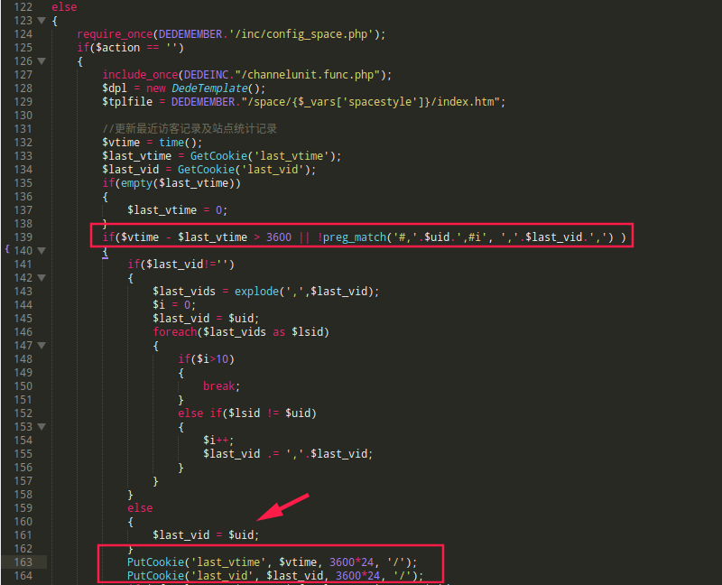
在文件include/common.inc.php，发现109-117对外部传入的变量和值进行声明，从这里可以看出uid值是可控的。(通过GET)，进而可知cookie中的$last_vid是可控的
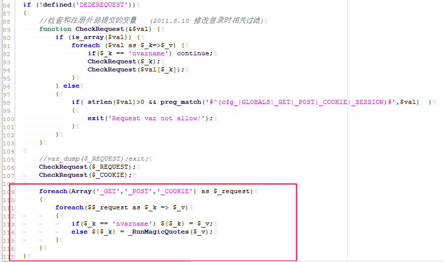
跟进PutCookie方法，关注第二个setcookie方法。将$cfg_cookie_encode和$value（$last_vid）进行mad5运算截取前十六位。$cfg_cookie_encode保存在服务端/uploads/data/config.cache.inc.php中为固定值。
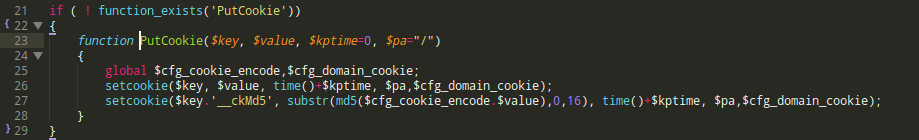
在文件uploads/include/helpers/cookie.helper.php下找到验证用户登录是否合法的关键方法GetCookie,
第65行中if($_COOKIE[$key.'__ckMd5']!=substr(md5($cfg_cookie_encode.$_COOKIE[$key]),0,16)) 发现与PutCookie生成cookie值方法相同。
想要通过伪造cookie得能够通过任意文件或者下载漏洞得到/uploads/data/config.cache.inc.php中得到$cfg_cookie_encod值。还有另一种方法就是通过用户第一次登录使用PutCookie方法生成的cookie值，这样cookie值就能够通过GetCookie效验。
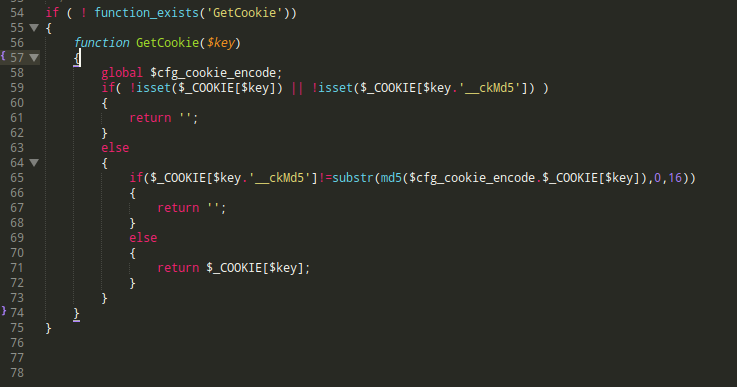
在uploads/include/memberlogin.class.php发现对账号密码的效验成功之后进入PutLoginInfo方法。
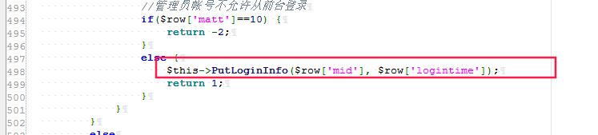
跟进PutLoginInfo,在登录时所用生成cookie的规则与PutCookie相同
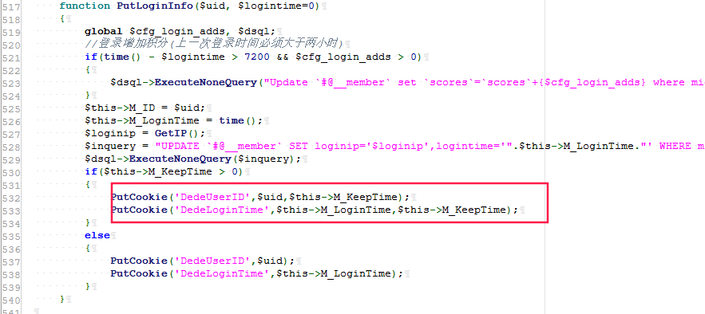
现在跟入登录检测代码块，在文件/uploads/include/memberlogin.class.php中，
第161行找到关键类Memebrlogin ,查看析构函数，发现DedeUserID通过对GetCookie方法进行cookie效验(与PutCookie生成规则相同)。在第185行中，传入数据库查询获取结果显示在界面上。
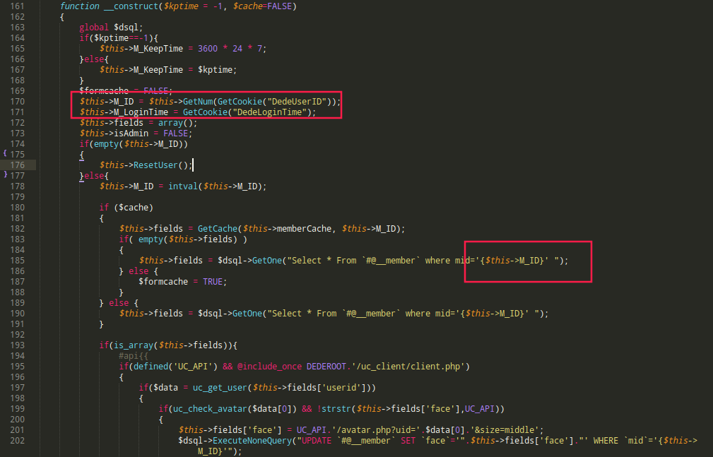
漏洞复现
情况一
1.通过该类可知传入数据库查询的mid值是通过DedeUserID进行查看，且mid在数据中为整型。所以注册用户名0001使得与admin的mid匹配达到越权目的
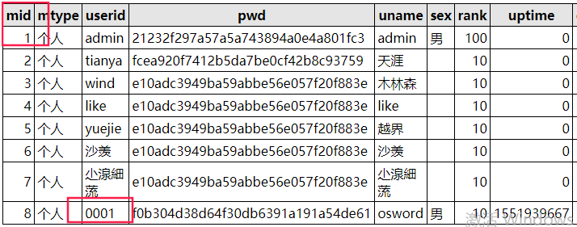
2.清理本机浏览器缓存访问网站http://127.0.0.1/Dedecms/uploads/member/index.php?uid=0001, 通过可控变量uid使得PutCookie下发cookie到客户端
生成last_vid last_vid_ckMd5
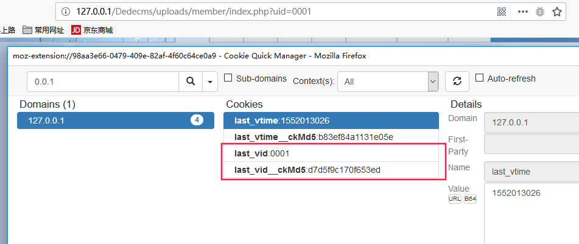
3.访问http://127.0.0.1/Dedecms/uploads/member/index.php 登录用户，获得服务端下发的cookie。
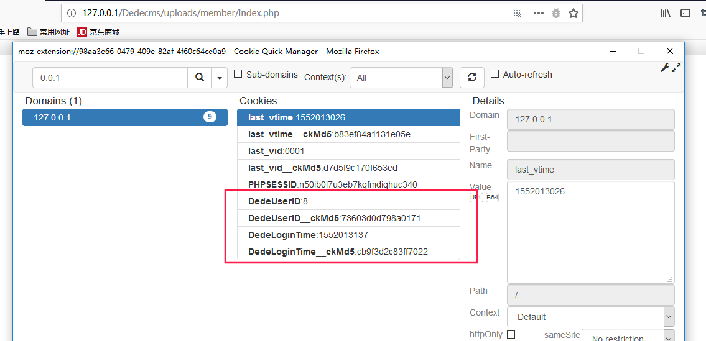
4.将last_vid赋值给DedeUserID=0001,lastA_vid_ckMd5赋值给DedeUserID_ckMd5=d7d5f9c170f653ed。刷新界面成功越权
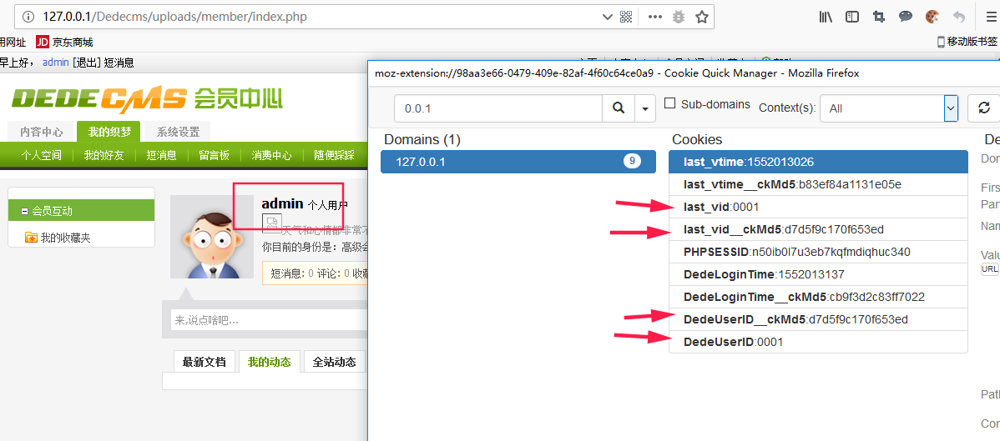
情况二
跟入index.php, uid不为空时的查询语句，发现在uploads/member/inc/config_space.php， 中存在sql语句使用like查询，所以我可以构造用户名为xxx1xxx，也能达到越权。
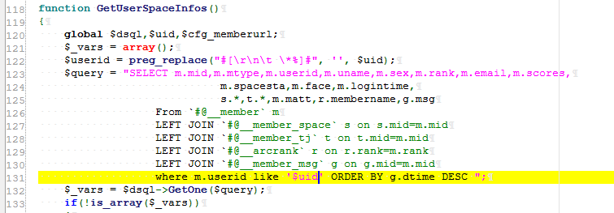
参考链接
代码审计| DEDECMS -V5.7-UTF8-SP2-20180109漏洞集合：https://www.freebuf.com/column/161703.html
漏洞成因分析
- 使用初始访问uid服务端下放cookie值与用户登录生成cookie进行赋值，验证cookie方法相同。
- 页面返回的用户信息通过DedeUserID进行赋值到索引mid中查询，语句为在文件/uploads/include/memberlogin.class.php中找到
1
2$this->M_ID = $this->GetNum(GetCookie("DedeUserID"));
$this->fields = $dsql->GetOne("Select * From `#@__member` where mid='{$this->M_ID}' ");
所以只要成功验证通过cookie值，将查询admin索引条件mid赋值即可越权
总结
复现时候要有总体思路，刚开始没思路会有很乱。
首先我觉得先用debug跑一圈分析登录程序运行情况。既然成功越权是因为cookie验证漏洞和mid索引，那么就要分析
a.cookie生成规则和验证规则在各种情况下的出入，
b.sql查询mid值是怎样被赋值。分析页面成功回显admin界面php,sql执行情况
小tips:使用mid进行查询可以防止sql约束攻击
参考链接https://www.freebuf.com/articles/web/124537.html